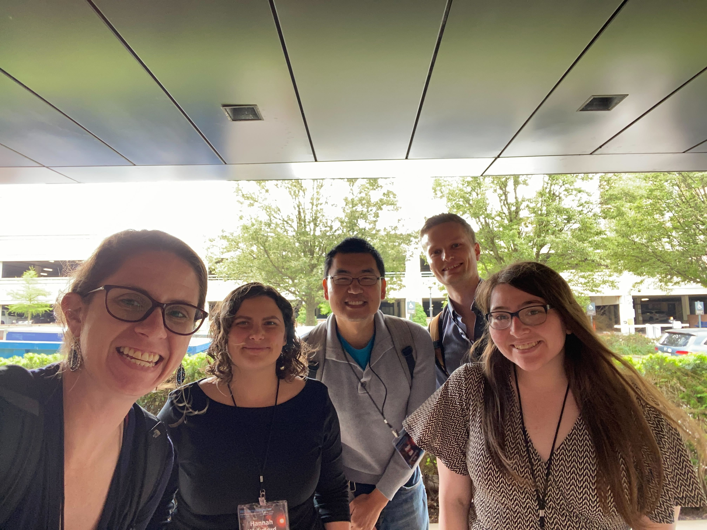

COMPASS Presentation at STScI 2023 Spring Symposium
Team member Nicole Wallack presented initial results for TOI-863.01
Nicole's poster gave a status update on our analysis of TOI-836.01 (which she is leading from the observational side), in particular an issue we are seeing across multiple reductions (Eureka!, ExoTIC-JEDI, Tiberius) where the mid-transit times fit to the NRS1 and NRS 2 data differ by multiple sigma. Nicole has done a deep dive on a systematic model that includes different JWST engineering parameters, but so far we haven't been able to crack this difference. We haven't heard of any other teams/data sets with this issue, but if you're seeing something similar, please reach out! Below is a photo of team members at the meeting, L-R: Johanna, Hannah, Peter, James, & Nicole.
